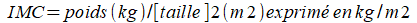
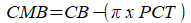

Indicateurs biométriques
Poids
Variation de poids chez un même sujet et cinétique de la perte de poids : perte pondérale exprimée en pourcentage par rapport au poids habituel
Valeurs seuil : baisse de 5% du poids en 1 mois ou de 10% du poids en 6 mois
Une dénutrition diminue le poids et une rénutrition l'augmente. Mais un sujet obèse ou oedémateux peut présenter une dénutrition. La mesure du poids est donc simple et peu onéreuse, mais elle reste peu interprétable étudiée isolément.
Taille
La mesure de la taille ne peut être prise comme un indicateur de l'état nutritionnel, mais reste indispensable pour le calcul de certains indices comme l'Indice de Masse Corporelle.
Indice de Quételet ou Indice de Masse corporelle (IMC)

Comme pour la mesure du poids, l'IMC est perturbé par la présence d'oedèmes ou d'une déshydratation
État nutritionnel | |
Inférieur à 10 | Dénutrition grade 5 |
10 à 12.9 | Dénutrition grade 4 |
13 à 15.9 | Dénutrition grade 3 |
16 à 16.9 | Dénutrition grade 2 |
17 à 18.4 | Dénutrition grade 1 |
18.5 à 24.9 | Normal |
25 à 29.9 | Surpoids |
30 à 34.9 | Obésité grade 1 |
35 à 39.9 | Obésité grade 2 |
40 | Obésité grade 3 |
Remarque :
Cas particulier des personnes âgées
Après 65 ans, Beck et Ovesen proposent que les normes de l'IMC soient relevées à 24-29 kg/m2, à partir d'une revue de la littérature, afin de dépister une dénutrition à l'état infra clinique et de prévenir ses complications.
Pour les sujets âgés de plus de 70 ans, le Club francophone gériatre et nutrition propose un seuil diagnostique de 21 kg/m2.
Plis cutanés
Le pli cutané correspond à une double couche de peau et de graisse sous-cutanée qui donne une estimation de la masse grasse de l'organisme. L'hypothèse est qu'il existe une relation constante entre la masse grasse totale et l'épaisseur de la graisse sous-cuta+née mesurée à certains endroits.
Les valeurs sont exprimées en millimètres.
Seuil utilisé pour le diagnostic de dénutrition
On peut évoquer une dénutrition en dessous de valeurs du pli cutané tricipital
- Pour l'homme : <10 mm
- Pour la femme : <15 mm
Circonférence brachiale (CB)
Cette mesure est exprimée en centimètres et permet d'estimer l'état de la masse grasse et de la masse musculaire.
La circonférence brachiale est mesurée à mi-distance entre l'acromion et l'olécrane, au même endroit où sont mesurés les plis cutanés.
1-La circonférence musculaire brachiale (CMB)
Elle est calculée à partir de la circonférence brachiale (CB), et du pli cutané tricipital (PCT).

2-Reproductibilité
Tout comme la mesure des plis cutanés, la mesure de la circonférence brachiale est opérateur-dépendant.
3-Normes
Les normales de la circonférence musculaire brachiale sont de 20 à 23 cm chez la femme, et de 25 à 27 cm chez l'homme
La circonférence brachiale estime la masse grasse, cette technique est aisée au lit du malade mais nécessite de l'entraînement de la part de l'examinateur.
Masse maigre, masse grasse, et masse musculaire
La masse maigre est composée essentiellement d'eau, de minéraux et de muscle.
La masse musculaire est un reflet des réserves protéiques de l'organisme, elle dépend de l'âge et du sexe : les hommes ont une masse musculaire plus importante, ainsi que les sujets jeunes.
Les estimations de masse maigre et de masse musculaire ne donnent qu'une évaluation indirecte de la composition protéique du corps.